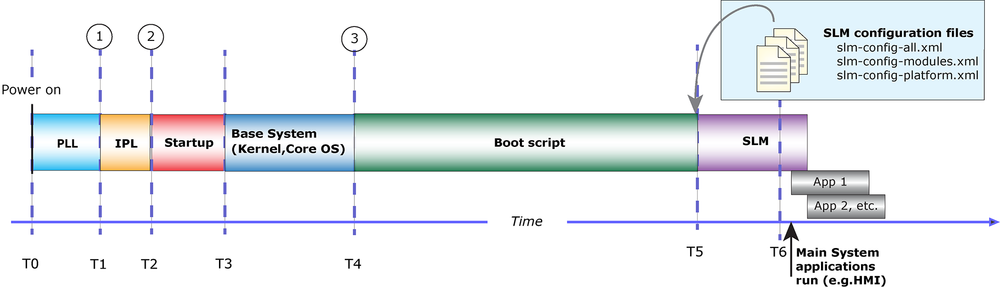

The boot process consists of several tasks, each handled by a specialized component.
These tasks are:
To ensure that software and hardware components are initialized and ready when needed, the system architect or designer must think deliberately through each of these stages. QNX offers a number of mechanisms to help meet your particular bootup requirements. This document will walk through the entire bootup sequence, offering techniques you can use at each stage to optimize the bootup sequence for the particular requirements of your system.

When the power is first turned on your system, the PLL, IPL, and startup program run and bring up your base system. The base system is primarily the kernel or core operating system. From there, a boot script runs to load device drivers, run services, and start applications. Then finally the main system boots, which allows the main applications of your system to boot, such as the HMI (human machine interface). These boot stages are describe below, in sequence of execution.
PLL refers to how long it takes for the first instruction to begin executing after power is applied to the processor. Most CPUs have a PLL that divides the main crystal frequency into all the timers used by the chip. The time that the PLL takes to settle to the desired frequencies often represents the largest portion of the chip's startup time. The PLL stage is independent of any OS and varies from CPU to CPU; in some cases, it takes as long as 32 milliseconds. Consult the hardware platform's user manual for the exact timing.
QNX provides a standard, bare-bones IPL that performs the fewest steps necessary to configure the memory controller, initialize the chip selects and/or PCI controller, and configure other required CPU settings. Once these steps are complete, the IPL copies the startup program from the image filesystem (IFS) into RAM and jumps to it to continue execution.
The IFS contains the OS image, which consists of the startup program, the kernel, the boot script, and any other drivers, applications, and binaries that the system requires. Because you can control what the IFS contains, the time for the copying stage varies, but it typically constitutes the longest part of the kernel boot process. In extreme cases, where the system contains a very large image and has no filesystem other than the IFS, this stage can take a long time (10 seconds or more).
That said, you can exercise a great deal of control over the length of this phase, albeit indirectly, by reducing the size of the IFS. To add, remove, or configure files stored in the IFS, you can edit the script block in the buildfile or use the QNX System Builder in the IDE. You can also compress the image to make the IFS smaller (with the additional overhead of decompression, which you can speed up by enabling the cache in the IPL).
Typically, the bootloader executes for at least six milliseconds before it starts to load the OS image. The actual amount of time depends on the CPU architecture, on what the board requires for minimal configuration, and on what the chosen bootloader does before it passes control to the startup program.
Some boards come with another bootloader, such as U-Boot. These bootloaders aren't as fast as the QNX IPL, since the IPL has been specifically tuned for QNX systems. We recommend that you replace your bootloader with the IPL.
For more information on the IPL and how to modify it for your purposes, see the Initial Program Loaders (IPLs) chapter in Building Embedded Systems.
The first program in a bootable OS image is a startup program whose purpose is to initialize the hardware, initialize the system page, initialize callouts, and then load and transfer control to the kernel (procnto-smp-instr). If the OS image isn't in its final destination in RAM, the startup program copies it there and decompresses it, if required.
During bootup, the kernel initializes the memory management unit (MMU), creates structures to handle paging, processes, and exceptions, as well as enabling interrupts. Once this phase is complete, the kernel is fully operational and can begin to load and run user processes from the boot script.
Each board has a different set of scripts to support different configurations. The script blocks in the buildfile lets you specify which drivers and applications to start, and in what order.
You can use the boot script to launch services and utilities that need to be running very early (for example, sound a chime, show a splash screen, or show a video feed from a camera) or that require extra time to load (for example, disk drivers). Wherever possible, these processes should be started in the background to optimize parallelism and maintain the highest possible utilization of the CPU until all components of your system are running and operational.
It's also important to limit what goes into the boot script because it's included in the IFS, and everything that's added to it increases the IFS size and the time it takes to load it. Here are some of the things you might load in the boot script:
SLM is a service that starts the processes required for your system. Typically, there are processes and applications that aren't required immediately, such as network connectivity (io-sock) or processes that need to start before your main application, such as an human-machine interface (HMI). At this point, SLM waits for further instructions. SLM is controlled by a set of configuration files (slm-config-all.xml and slm-config-platform.xml) that tell it what modules to start and whether there are dependencies within or between those modules.
For more information, see the System launch and monitor (SLM) section in the Utilities Reference.